Costruzione degli inviluppi di sollecitazione per conci da ponte
Dal caso elementare all'inviluppo
Per ogni concio servono massimi e minimi delle sollecitazioni derivanti dalle combinazioni.
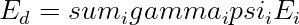
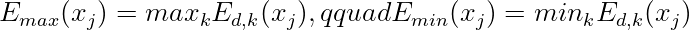
Esempio.
Momenti (820), (940), (760,mathrm{kNm}) danno:
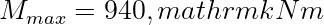
Minimi (-210), (-330), (-180,mathrm{kNm}) danno:
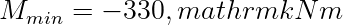
Riferimenti tecnici utilizzati:
- D.M. 17 gennaio 2018, Aggiornamento delle Norme Tecniche per le Costruzioni (NTC 2018).
- Circolare C.S.LL.PP. 21 gennaio 2019, n. 7, Istruzioni per l'applicazione dell'Aggiornamento delle Norme Tecniche per le Costruzioni.
Riferimento aggiuntivo.
- UNI EN 1990, Criteri generali di progettazione strutturale.
Nota StruHub.
L'inviluppo è un dato di progetto e deve restare collegato alla combinazione che lo genera.
Governante non significa massimo assoluto ovunque
La combinazione che governa un concio può non governare quello vicino. Per questo l'inviluppo va costruito per stazione e per componente. Una singola combinazione globale raramente spiega tutta la struttura.
Identificazione della combinazione critica
Oltre al valore massimo, conviene memorizzare l'indice della combinazione:
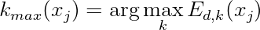
Questa informazione serve quando si passa dalla verifica numerica alla relazione di calcolo: permette di spiegare perché una sezione è governata da traffico, temperatura o fase costruttiva.
Inviluppi coerenti per verifiche composte
Per verifiche con interazione, ad esempio
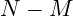
, può essere necessario usare set concomitanti e non solo massimi indipendenti. La coppia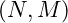
va letta dalla stessa combinazione quando entra in un dominio resistente.Nel tema di la costruzione degli inviluppi, il punto non è ottenere un coefficiente isolato, ma costruire una catena coerente tra modello globale e verifica locale. Il carico applicato al conci di ponte attraversa una gerarchia resistente: soletta, traversi, travi principali, appoggi e infine sottostrutture.
Il primo controllo è l'equilibrio. Se gli effetti ripartiti non ricostruiscono l'azione globale, il modello non è accettabile. Il secondo controllo è la compatibilità : gli elementi connessi non possono deformarsi come sistemi indipendenti se la soletta o i collegamenti impongono continuità .
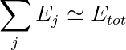
Rigidezze equivalenti e sensibilitÃ
La ripartizione dipende dai rapporti di rigidezza, non dai soli interassi geometrici. Un elemento molto rigido attira più domanda, mentre un elemento flessibile tende a scaricare verso gli elementi vicini. Questo vale per travi, piastre equivalenti e modelli a graticcio.
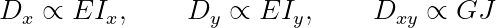
Una variazione del 20% nella rigidezza trasversale può modificare in modo significativo il coefficiente di ripartizione. Per questo l'articolo tecnico non deve limitarsi a presentare il risultato: deve spiegare quali parametri lo muovono.
Esempio di confronto. Si consideri un effetto globale (E_{tot}=1000\,\mathrm{kNm}). Un primo modello fornisce coefficienti (0.20,0.35,0.35,0.10); un secondo modello, con maggiore rigidezza trasversale, fornisce (0.24,0.29,0.29,0.18). I due risultati sono entrambi equilibrati, ma raccontano impalcati diversi.
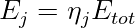
Nel primo caso la domanda è concentrata sulle travi interne; nel secondo la distribuzione è più uniforme. La scelta progettuale deve leggere questa differenza, non solo copiare il massimo valore.
Uso nella relazione tecnica
Una relazione ben costruita dovrebbe riportare schema dell'impalcato, rigidezze equivalenti, posizione dei carichi, coefficienti ottenuti e controllo di equilibrio. Se il metodo è semianalitico, è utile affiancare un confronto con un modello graticcio o FEM semplificato.
Un inviluppo senza informazione sulla combinazione governante è difficile da revisionare. Il valore massimo deve portarsi dietro il caso che lo ha generato. In questo modo il post diventa un riferimento tecnico: non propone soltanto un numero, ma insegna a giudicarlo.
Dal modello globale alla verifica locale. Nei temi di impalcato, sezioni composte e azioni di progetto, il passaggio più importante è collegare una grandezza globale a un controllo locale. Un momento globale lungo l'impalcato non è ancora una verifica di fibra; un carico da traffico non è ancora una tensione; un coefficiente di ripartizione non è ancora una domanda resistente. Il calcolo diventa affidabile quando ogni trasformazione è esplicita.
La sequenza tipica è: definizione dell'azione, scelta dello schema resistente, calcolo dell'effetto globale, ripartizione o trasformazione sezionale, verifica della fibra o dell'elemento. Saltare uno di questi passaggi produce risultati difficili da revisionare.
Tracciabilità delle combinazioni. Ogni valore dovrebbe conservare l'origine. Se una sezione ha (M_{max}=950\,\mathrm{kNm}), la relazione deve indicare se deriva da traffico, temperatura, fase costruttiva, ritiro o combinazione sismica. In assenza di questa informazione il dato è numericamente utile ma tecnicamente debole.
Una forma pratica di archiviazione è associare a ogni effetto tre campi: valore, combinazione governante e posizione. Per gli inviluppi:
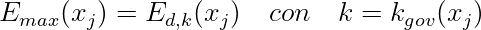
Questa scrittura chiarisce che il massimo non è astratto: è prodotto da una combinazione precisa.
Controllo delle rigidezze. Quando si lavora con ripartizioni, sezioni composte o fasi costruttive, la rigidezza è il parametro più influente. Una rigidezza sbagliata può produrre una distribuzione apparentemente equilibrata ma fisicamente non corretta. Per questo, prima della verifica, conviene riportare le proprietà principali: area, inerzia, modulo elastico, coefficiente di omogeneizzazione e fase resistente.
Per una sezione composta, ad esempio, una stessa azione può produrre tensioni diverse se applicata prima o dopo la maturazione della soletta. Il valore finale è la somma di contributi nati in tempi diversi:
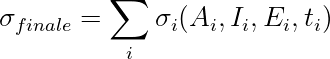
La notazione evidenzia che ogni contributo ha proprietà resistenti proprie.
Esempio di lettura critica. Si consideri un impalcato con quattro travi. Un modello semplificato fornisce coefficienti (0.18,0.32,0.32,0.18), mentre un modello più rigido trasversalmente fornisce (0.22,0.28,0.28,0.22). Entrambi rispettano l'equilibrio, ma il secondo distribuisce maggiormente verso le travi laterali. Se la verifica locale di una trave laterale è vicina al limite, questa differenza non è accademica.
Scrittura da riferimento tecnico. Il testo deve accompagnare il lettore dalla causa all'effetto: quale azione entra, come viene distribuita, quale proprietà resistente la trasforma in tensione o sollecitazione, quale limite viene controllato. Questa catena rende l'articolo consultabile anche a distanza di tempo.
Inviluppo come oggetto di progetto. L'inviluppo di sollecitazione per conci da ponte non e una figura accessoria: e l'oggetto che collega analisi globale, verifica locale e dettagli costruttivi. Ogni concio vede combinazioni diverse di momento, taglio, torsione, normale, effetti da precompressione, fasi costruttive e carichi mobili. Per una grandezza generica
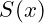
, l'inviluppo massimo e minimo possono essere scritti come: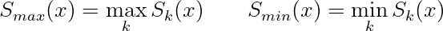
dove
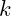
indica configurazioni di carico, fasi o combinazioni. La formula sembra banale, ma nella pratica contiene due scelte decisive: quali configurazioni sono incluse e quale stato limite si sta considerando. Un inviluppo SLE non ha lo stesso significato di un inviluppo SLU; una fase provvisoria non va confusa con la configurazione finale.Nei ponti a conci, la posizione della sezione rispetto agli appoggi e alla campata modifica il ruolo delle azioni. In mezzeria domina spesso il momento positivo; vicino agli appoggi continui cresce il momento negativo; nelle zone di deviazione o ancoraggio diventano importanti taglio, torsione e tensioni locali.
Combinazioni e contemporaneita. Un inviluppo scalare non conserva sempre la contemporaneita delle azioni. Se si verifica una sezione pressoinflessa, la coppia
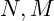
deve essere letta insieme. Se si verifica taglio e torsione, anche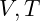
possono dover restare associati. Un modo piu robusto consiste nel salvare, oltre al massimo di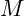
, anche le azioni concomitanti: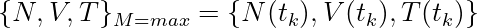
Nel caso dei carichi mobili, l'inviluppo richiede lo scorrimento del convoglio o del modello di carico lungo l'impalcato. La linea di influenza
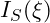
consente di esprimere la sollecitazione come: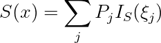
Questa relazione e fondamentale per capire perche il massimo in una sezione non corrisponde sempre al carico "piu vicino" alla sezione. La forma della linea di influenza governa la posizione sfavorevole. Quando si citano inviluppi da traffico su ponti, i riferimenti principali sono D.M. 17 gennaio 2018, Capitolo 5, UNI EN 1990:2006 e UNI EN 1991-2:2005.
Riferimenti normativi e bibliografici utilizzati:
- D.M. 17 gennaio 2018, "Aggiornamento delle Norme tecniche per le costruzioni", Ministero delle Infrastrutture e dei Trasporti, Supplemento ordinario alla Gazzetta Ufficiale n. 42 del 20 febbraio 2018.
- Circolare C.S.LL.PP. 21 gennaio 2019, n. 7, "Istruzioni per l'applicazione dell'Aggiornamento delle Norme tecniche per le costruzioni di cui al decreto ministeriale 17 gennaio 2018".
- UNI EN 1990:2006, Eurocodice - Criteri generali di progettazione strutturale.
- UNI EN 1991-2:2005, Eurocodice 1 - Azioni sulle strutture - Parte 2: Carichi da traffico sui ponti.
- UNI EN 1992-1-1:2015, Eurocodice 2 - Progettazione delle strutture di calcestruzzo.
- UNI EN 1993-1-1:2014, Eurocodice 3 - Progettazione delle strutture di acciaio.
- UNI EN 1994-2:2006, Eurocodice 4 - Progettazione delle strutture composte acciaio-calcestruzzo - Ponti.
- UNI EN 1997-1:2013, Eurocodice 7 - Progettazione geotecnica - Parte 1: Regole generali.
- UNI EN 1998-2:2011, Eurocodice 8 - Progettazione delle strutture per la resistenza sismica - Ponti.